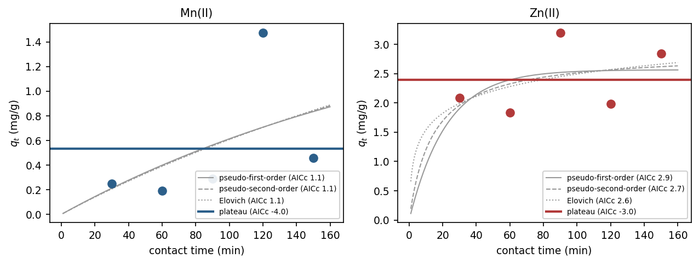
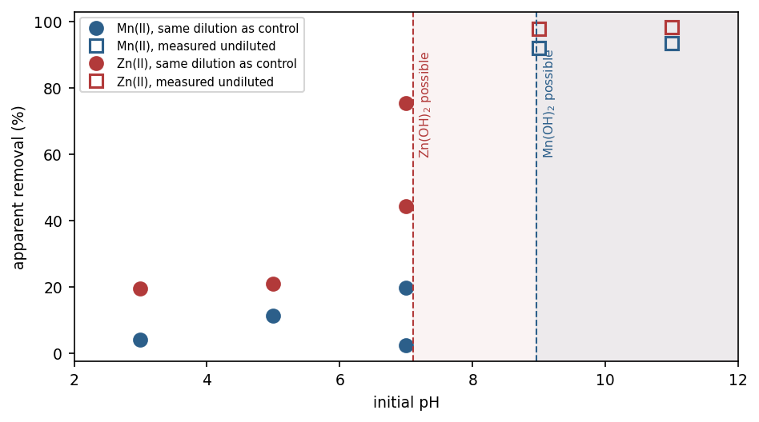
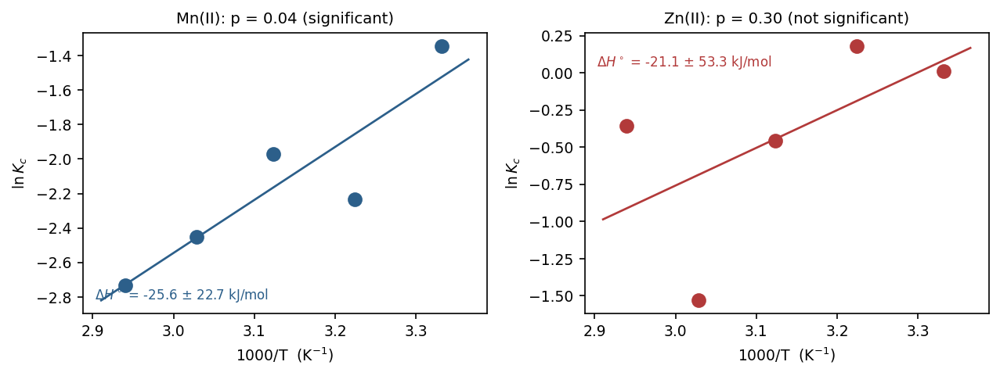
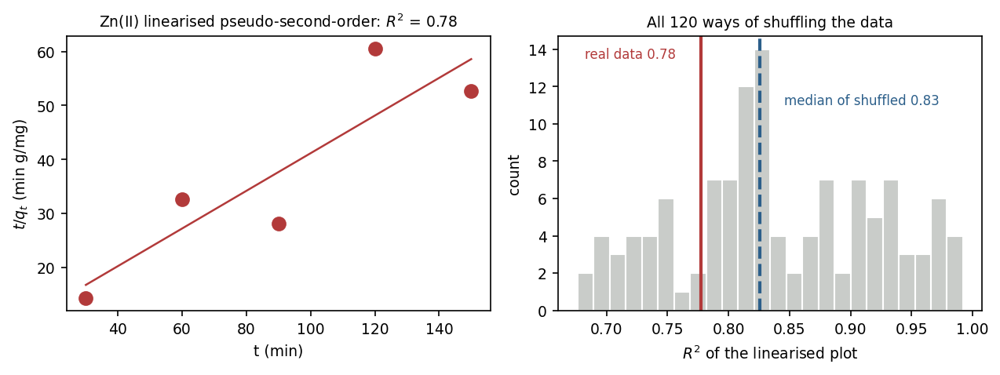

Osho Janet Oluwatimilehin
Chemistry graduate, Lagos, Nigeria. Removal of heavy metals from water, and Python for reproducible analysis.
oshojanettimilehinfatia@gmail.com GitHub LinkedIn ORCID 0009-0005-8019-2245 ResearcherID RFB-3630-2026
I studied chemistry at Lagos State University and spent my final year testing whether a common agricultural waste, white yam peel, could pull zinc and manganese out of water. The honest answer was that it works, but modestly, and several of the results that looked best turned out not to be adsorption at all.
Working out which results held up is the part I enjoyed most, so I rebuilt the whole analysis in Python and published it with the raw laboratory readings. I am now looking for a funded graduate position where I can keep doing this kind of work.
Research interests
Environmental and analytical chemistry, separation science, sustainable and green chemistry, materials and surface chemistry, physical and inorganic chemistry.
Low-cost adsorbents for water treatment, trace-metal quantification, and the statistical side of deciding what experimental data can and cannot support.
Research
Adsorption of Zn(II) and Mn(II) on white yam peel
Raw Dioscorea rotundata peel was washed, dried, ground and tested against zinc and manganese in synthetic aqueous solutions. I varied adsorbent dose, contact time, pH, temperature and initial concentration, measured residual metal by flame atomic absorption spectroscopy, and characterised the material by FTIR and SEM-EDS before and after contact.

What makes the project worth reading is the second pass. Several standard conclusions in this field did not survive a closer look at my own data.
| Kinetics | A constant-uptake plateau fits better than pseudo-second-order by about 5 AICc units. Uptake had already levelled off at the first measurement, so no rate constant is recoverable. |
|---|---|
| Isotherms | Mn(II) follows Freundlich with 1/n = 1.47, the unfavourable regime. For Zn(II) all three models fit the usable points equally well, so none can be preferred. |
| Thermodynamics | Mn(II) shows an exothermic trend, ΔH° = −25.6 ± 22.7 kJ/mol. For Zn(II) the regression is not significant, so no values are reported. |
| Effect of pH | Apparent removal above 90% at pH 9 and 11 sits above the pH where the metal hydroxides can precipitate, so it cannot be called adsorption. The defensible figures are 21.0% and 11.4%, both at pH 5. |



Reproducible reanalysis of the thesis data
Every figure is computed from the raw atomic absorption readings, which are published alongside the code. The first notebook checks twelve derived values against the numbers printed in the thesis, so a transcription or arithmetic error would stop the run.
Two checks do most of the work. With five time points there are only 120 ways to pair the measured uptakes with the times, so I enumerate all of them: the linearised pseudo-second-order plot scores 0.78 on the real data and a median of 0.83 on shuffled data, which means the plot cannot tell the measurements from noise. A rank correlation of −0.90 between residual concentration and uptake in the dose series shows that series is not an isotherm dataset at all, so it is excluded and the reason is documented.

Publications and manuscripts
Osho, J. O. and Olowu, R. A. Kinetic, Isotherm and Thermodynamic Studies on the Adsorption of Zn(II) and Mn(II) onto White Yam Peels.
Presentations
Adsorption of Zn(II) and Mn(II) on white yam peel.
Python projects
-
Custom hash table
-
Tower of Hanoi solver
-
Budget app
-
Polygon area calculator
-
User configuration manager
-
Python labs archive
-
Python workshops archive
Laboratory and analytical skills
Instrumental analysis performed
UV-Vis spectroscopy, conductometry, digital pH-metry, and complexometric and volumetric titrations, carried out in undergraduate practicals across 100 to 400 level and in water quality work during SIWES.
Instrumental data interpreted
Flame atomic absorption spectroscopy, FTIR and SEM-EDS. For the thesis these measurements were run at an external laboratory. I prepared and submitted the samples and interpreted the reported output: matching EDS peak positions against tabulated X-ray emission lines, judging FTIR band shifts against the instrument resolution, and checking the reported compositions against the uptake measured independently by AAS.
Laboratory technique
Biomass processing and precision sieving, batch adsorption experiments on an HY-4 shaker, jar testing on a flocculator, thermostatic water bath work, serial dilution, buffer and standard preparation, titration and quantitative analysis. Safety data sheet interpretation, safe handling of acids, bases and heavy-metal salts, and chemical waste segregation.
Data handling and quality control
Dilution-factor verification, unit and dimensional checking, independent recalculation, traceability from a final value back to the raw instrument reading, relative standard deviation, data cleaning and reconciliation.
Modelling and statistics
Non-linear isotherm fitting (Langmuir, Freundlich, Temkin), kinetic model comparison (pseudo-first-order, pseudo-second-order, Elovich, intraparticle diffusion and constant-uptake plateau), AICc model selection, RMSE and residual analysis, regression with confidence intervals, van't Hoff analysis, permutation testing and correlation analysis.
Software
Python with pandas, SciPy, NumPy and Matplotlib, in Jupyter notebooks. Excel for regression and modelling. SQL, Tableau, Git and GitHub.
Operations and administration
Records management, scheduling, workflow coordination, procurement and supplier liaison, inventory control, filing and archiving.
Communication and research
Technical and scientific writing, literature review, reference and citation verification, written correspondence, and liaison with staff, parents and customers.
Experience
Chemistry Teacher and Administrative Support
Taught chemistry across SS1 to SS3, preparing students for the West African Examinations Council examinations. Managed attendance, academic performance and staff records for over 200 students, prepared weekly and termly assessment reports, and reorganised the filing system to cut retrieval backlogs. Served in the Red Cross Society community development group.
Industrial Chemist Intern (SIWES)
Determined physicochemical parameters of raw and treated water: pH, turbidity, colour by Lovibond comparator, iron, conductivity, salinity and total dissolved solids, recorded against plant quality-control targets, alongside microbiological testing of municipal samples under supervision.
Ran jar tests on a laboratory flocculator to find optimum coagulant dosing, varying alum, lime, calcium hypochlorite and polyelectrolyte across dose series and judging each by pH and residual turbidity. Prepared and standardised the 1% stock solutions used in those trials.
Studied the full treatment train at a works abstracting 4.3 to 4.5 million gallons per day, including vertical clarifier operation and the chemistry of coagulation, pH correction, softening and disinfection, with a field visit to the raw water source at River Owo.
Peer Tutor
Tutored coursemates in analytical and physical chemistry topics and in the calculations behind them.
Founder, Shop Timi Accessories and Essentials
Run day-to-day operations across jewellery, beauty products, fragrance, bags, drinkware and kids' items: inventory tracking, order processing, customer enquiries and resolution, supplier communication and procurement, and sales and financial records.
Other work experience
Customer Registration and Data Associate
Registered customers, verified documents and entered records into digital systems, then ran regular checks to find and correct errors in the database.
Administrative Support
Kept academic, attendance and communication records for over 100 pupils, prepared teaching materials and class schedules for a team of eight teachers, and handled communication between parents and school management.
Sales and Customer Service Associate
Processed cash and card payments with no discrepancies over a year, kept daily sales and inventory records, and supported in-store promotions.
Education
B.Sc. Chemistry
Research project graded A.
Analytical and physical: Analytical Chemistry I and II, Experimental Analytical Chemistry, Basic Physical Chemistry I and II, Chemical Kinetics, Chemical Thermodynamics, Spectroscopy and Separation Techniques, Atomic and Molecular Spectroscopy, Surface and Colloid Chemistry, Electrochemistry, Statistical Mechanics.
Environmental and applied: Environmental Chemistry, Industrial Chemistry I and II, Petroleum Chemistry, Nuclear and Radiation Chemistry, Biostatistics.
Inorganic and organic: Co-ordination Chemistry, Organometallic Chemistry, Transition Metal Chemistry, Main Group Chemistry, Quantum Chemistry, Organic Synthetic Methods, Physical Organic Reactions and Mechanism.
Academic strengths
- Grade A on the B.Sc. research project, and Grade A on the departmental seminar that preceded the defence
- Sustained high performance across recent graduate-level coursework: 100% on the freeCodeCamp Python certification exam, 98% in Cisco Data Analytics Essentials, 98% in Stanford's Writing in the Sciences, 94.87% in Saylor's Introduction to Statistics, and 92% on the University of Michigan Python capstone
- Classroom experience as a peer tutor at LASU and a full year teaching chemistry across SS1 to SS3 during NYSC
Certifications
- Python Developer Certification, freeCodeCamp
- MA121: Introduction to Statistics, Saylor University
- Writing in the Sciences, Stanford Online via Coursera
- Data Analytics Essentials, Cisco Networking Academy
- Leadership and Team Development, Young Nigeria Works with She Leads Africa
- SLA EmployHer Pathway (Basics), She Leads Africa
- Basic First Aid Course, Nigerian Red Cross Society, Ogun State Branch
- Capstone: Retrieving, Processing and Visualizing Data with Python, University of Michigan via Coursera
- Jobberman Soft-Skills Training, Jobberman Nigeria
Languages
- English, fluent. Medium of instruction throughout the B.Sc. degree
- Yoruba, native speaker
- German, A1, self-study in progress
- French, A1, self-study in progress
Affiliations and volunteering
- Member, Chemical Society of Nigeria, LASU student chapter
- Member, Nigerian Red Cross Society
- Environmental clean-up and awareness volunteer, Lagos